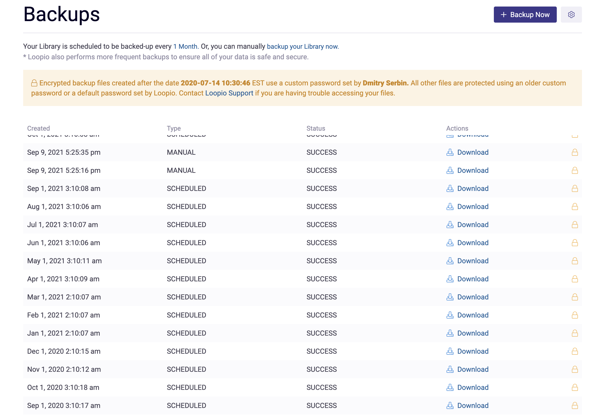
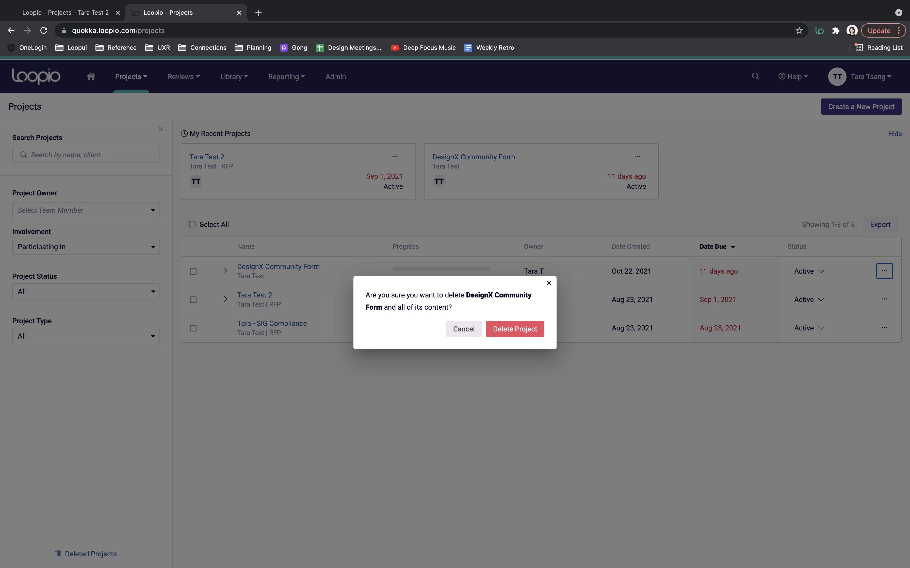
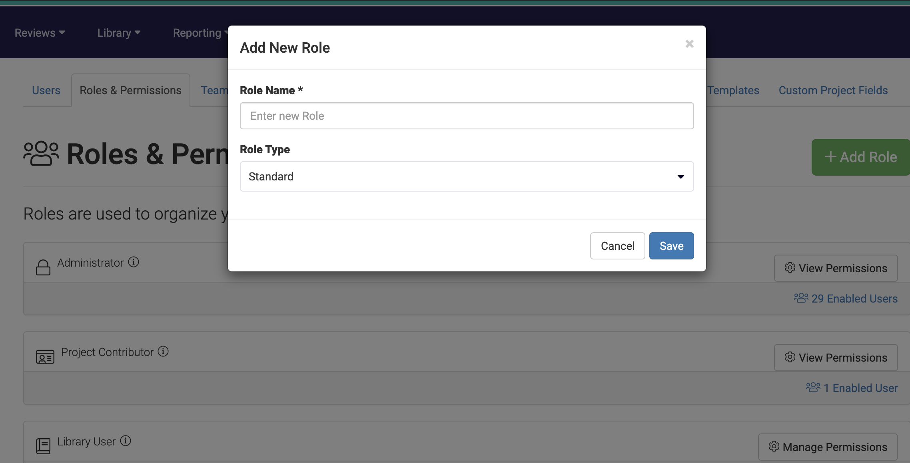

Inconsistencies
The Loopio platform is stuck between shifting to Loopui (v.1.0 and v.2.0) as well as migrating UI and IxD patterns from Bootstrap. This page identifies some of these Bootstrap -> Loopio inconsistencies so we have a better idea of what remains yet to be changed.
Search Inputs
The "Select Team Member" is an unintuitive combination of a dropdown menu and a type to search input.
Here, you can see multiple different searches in the PWS - 3 types of search on one page, each searching for something else. This turns the experience into something clumsy and cumbersome.
Tables
Tables are inconsistent between Bootstrap and Loopui styling.
- In the first & second images, here are things featured at the top (left) of the table - # results and functions (e.g. Export) are typically seen on the right (e.g. PWS).
- Pagination is featured at the top left (image 1, 2) whereas in the third image, it is featured at the bottom of the table.
- The header row in the first & second images is styled differently and denotes a primary key
- Visual tweaks, such as different row colours, background colours, having a title to the table, etc...
1. Reporting > Usage Report (old Bootstrap styling)
2. Admin > Users (old Bootstrap styling)
3. Dashboard (new Loopui styling)
4. Admin > Backups (old Bootstrap styling) - this table is infinite scroll and does not follow any other convention on the platform.
Filtering
Old Bootstrap employs multiple dropdowns with a filter button on the side. You are able to select multiple values and filter the final result. Examples of these pages include Reviews, Library > Tags, Library > Attachments, Library > Duplicates, Reporting (all three subtabs), and Admin.
The rest of the platform employs a vertical side panel on the left (e.g. Library) or dropdown menus.
Admin > Users (old Bootstrap styling)
Library (new Loopui styling)
PWS Filters (new Loopui styling)
Input Fields
Some sections in the Admin tab still use an old style of displaying an editable text box.
Admin > Teams (hover) - Bootstrap
Admin > Teams (input) - Bootstrap
Library > Merge Variables (input) - Loopui
Deletion modal
The deletion modal differs depending on if it is Bootstrap or Loopui. They function similarly but have different layouts, messaging, and levels of readibility.
Admin > Teams - Bootstrap
Projects - Loopui
Error messaging/prevention
In older Bootstrap parts of the platform, error messaging is unclear. In the first image, I am stopped after a certain character limit without any explanation and am able to save my work without issues. In the second, newer image, I am able to write as much as I need and given an explanation why I am unable to submit.
Admin > Teams - Bootstrap
Library > Merge Variables - Loopui
Half-width cards
These cards (plus a gigantic green button in the top right corner to add a card) are only seen in the Bootstrap corners of the platform (Admin tab). The Library > Tags page features similar cards with a smaller button in the top right corner.
Admin > Teams - Bootstrap
Admin > Project Plan Template - Bootstrap
Library > Tags - Bootstrap
Pagination
Only the Admin tab does not have easily accessible sub-tabs that appear as a sort of overflow menu. Bootstrap pagination appears more as a row of tabs at the very top.
Admin - Bootstrap
Menu - Loopui
Review Cycles
You can set a review cycle for library entries and for Project Plan Templates (Admin tab). The functionality for Project Plan Templates is unknown but it appears to help set checkpoints and milestones in place. Nevertheless, these two modals appear to set a deadline or date for a future check-in.
Admin > Project Plan Templates - Bootstrap
Library - Loopui
Adding New Things (Bootstrap)
The admin tab makes use of large green buttons to allow users to add new things (e.g. new teams, new users, etc...). Not only is this inconsistent with our non-Bootstrap designs (e.g. pulling up modals with different styling), there are inconsistencies across these Bootstrap experiences too.
Admin > Teams
Admin > Users
Admin > Roles and Permissions
Library Duplicates
The Library tab has a subpage meant to explore library entries that have been flagged as duplicates. Unfortunately, the styling is unlike anything else on the platform.
Library Duplicates has a number of filtering mechanisms/dropdowns as well as unclear paths back and forth between each step. Lastly, the interface and interactions are completely different from anything else on the platform.
Library > Library Duplicates
When you click on an entry

When you click to "Compare and Edit"